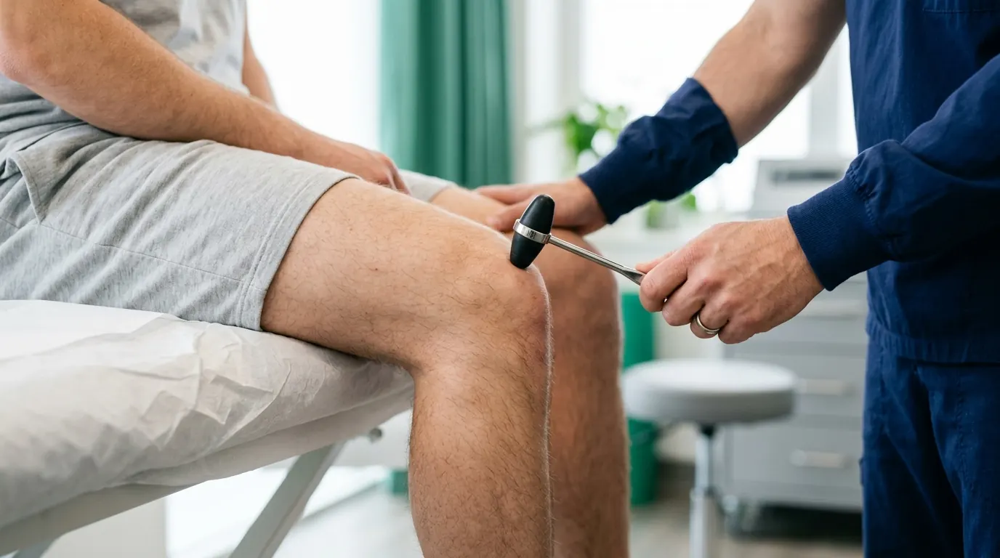

El dolor no está en el músculo. Está en la señal cerebral.
La medicina tradicional trata el síntoma mecánico. Nosotros rastreamos la disfunción neurológica en tu sistema nervioso central. A través del método Proprioceptive Deep Tendon Reflex (P-DTR), reseteamos las vías aferentes aberrantes para devolverte tu funcionalidad nativa de forma inmediata, sin fármacos ni tratamientos mecánicos innecesarios.
Acreditaciones en Neurología Funcional y Medicina Deportiva
El fin de las compensaciones estructurales.
Cuando sufres una lesión o trauma, tus mecanoreceptores (los sensores nerviosos de tu cuerpo ubicados en piel, fascias y ligamentos) envían información distorsionada al cerebro. Como mecanismo de defensa inmediato, tu córtex motor inhibe unos músculos dejándolos en debilidad, y sobrecarga otros causando espasmos. Ese es el verdadero origen del dolor crónico y las hernias.
Con P-DTR (Proprioceptive Deep Tendon Reflex), no damos masajes ni aplicamos corrientes. Localizamos el sensor exacto que está fallando a través de estímulos reflejos y lo reiniciamos, corrigiendo el problema de raíz desde el sistema nervioso central.

Mapeo del Sistema Nervioso
El cuerpo humano opera como una computadora. Utilizamos estímulos sensoriales específicos (presión, estiramiento, roce) como "teclas" para testear qué receptores nerviosos están enviando respuestas aferentes corruptas al cerebro, aislando el circuito defectuoso.
Reseteo Reflejo
Al identificar el receptor dañado, utilizamos el reflejo tendinoso profundo simultáneo para borrar el error neurológico de forma instantánea y restaurar la fuerza motora.
Intervención Clínica de Élite
Combinamos la potencia resolutiva del método P-DTR con neurodinamia clínica avanzada y medicina deportiva. Una práctica respaldada por certificaciones internacionales y P-DTR Global, reservada para atletas y pacientes que exigen resultados estructurales definitivos, sin recurrir a la sobre-medicación o terapias innecesarias derivadas de diagnósticos meramente mecánicos.
Revisar credenciales médicas completasRespaldado por resultados reales.
Pacientes de alto rendimiento, post-operatorios complejos y casos clínicos crónicos que encontraron una solución definitiva tras meses o años de diagnósticos fallidos.
"Llevaba meses con un dolor de rodilla que no me dejaba correr. Fui a varios terapeutas convencionales sin éxito. En una sola sesión con P-DTR el Dr. Alejandro encontró que el problema venía de un ligamento mal curado del tobillo. El dolor desapareció al instante al resetearlo."
"Impresionante. Después de mi lesión de hombro perdí muchísima movilidad y siempre tenía espasmos. El doctor me evaluó el sistema nervioso, encontró las fascias que estaban enviando la señal de alerta al cerebro y me regresó la movilidad completa en dos sesiones. Ciencia pura."
Centro de Conocimiento Médico
Divulgación sobre neurociencia aplicada, análisis de casos clínicos y artículos sobre cómo el método P-DTR revoluciona la recuperación.
Por qué estirar un músculo acortado puede empeorar tu lesión
La neurobiología de la tensión muscular como mecanismo de defensa y el grave error clínico de los estiramientos forzados sin diagnóstico neurológico.
El sistema fascial y la memoria del tejido
Cómo una cicatriz antigua de apendicitis puede estar causando tu dolor de hombro actual a través de las redes de receptores fasciales aberrantes.
Inicia la corrección hoy.
El Dr. Alejandro Gutiérrez te espera en nuestra clínica en Pachuca para realizar un diagnóstico completo de tu sistema neuromotor.
Agendar Sesión P-DTR vía WhatsApp